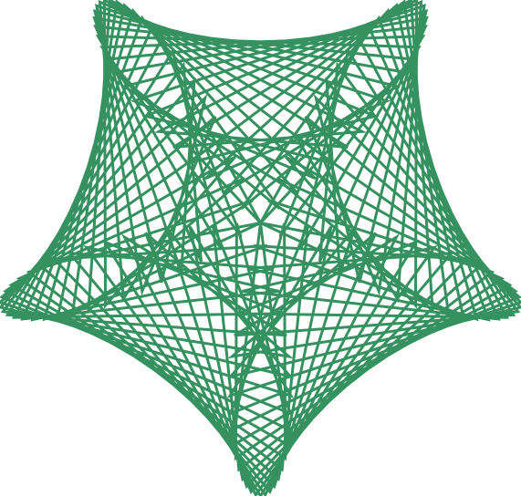

Maurer rose
Obs
Go to the end to download the full example code
Maurer rose#
Maurer roser er matematiske mønstre som kan se litt ut som blomster. For mer informasjon kan du se den engelske Wikipedia siden om Maurer roser
from turtlethread import Turtle
from math import pi, sin, cos
nål = Turtle()
n = 5
d = 97
with nål.running_stitch(10):
for theta in range(181):
k = theta * d * pi / 180
r = 300 * sin(n * k)
x = r * cos(k)
y = r * sin(k)
nål.goto(x, y)
nål.save("maurer_rose.svg")
Total running time of the script: (0 minutes 0.036 seconds)